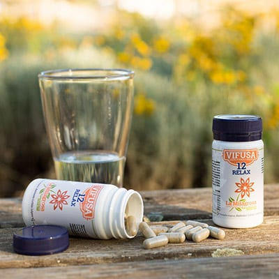
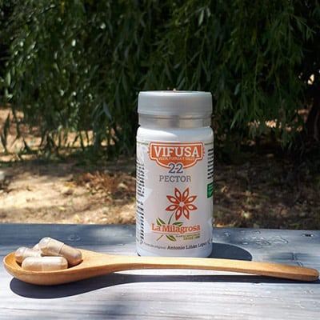
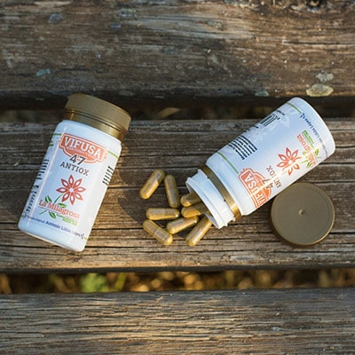
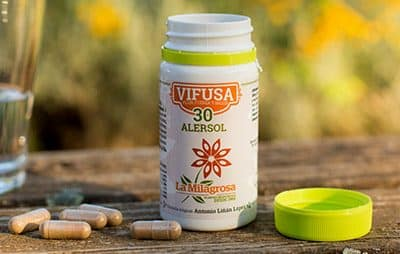
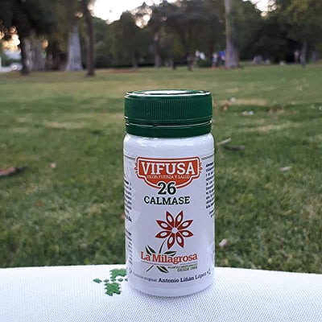
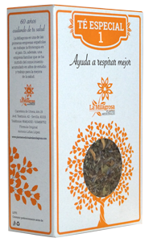
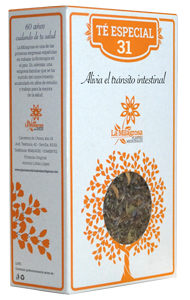
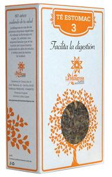

"ARMONÍA Y NATURALEZA"
| Articulo | Nombre | Propiedades/Usos | Dosis recomendada | Referencia | Precio/unidad |
|---|
| 1 |  | 12 RELAX | RELAJANTE, PARA CALMAR LOS NERVIOS Y CONCILIAR EL SUEÑO, ADECUADO PARA
TRANSTORNOS DE ORIGEN NERVIOSO Y DE ANSIEDAD. | DOSIS RECOMENDADA:
DE 2 A 6 CAPSULAS AL DIA. | Ref:A122 | 128€/Ud |
|---|
| 2 |  | 22 PECTOR | EXPECTORANTE, BALSÁMICO, ANTIBACTERIANO UTILIZADO EN AFECCIONES DEL APARATO RESPIRATORIO, TOS, CATARROS, ENFRIAMIENTOS, GRIPE, BRONQUIOS, ASMA. | DOSIS RECOMENDADA:
DE 4 A 6 CAPSULAS AL DIA,
REPARTIDAS EN LAS COMIDAS. | Ref:A322 | 102€/Ud |
|---|
| 3 |  | 47 ANTIOX | ANTIINFLAMATORIO, ANTIOXIDANTE, REFUERZO DEL SISTEMA INMUNOLOGICO, RECOMENDADO PARA LA ARTRITIS REUMATOIDE, Y OTROS PROCESOS REUMATICOS, SINDROME DEL TUNEL CARPIANO y DAÑOS MUSCULARES. | DOSIS RECOMENDADA:
HASTA 3 CAPSULAS AL DIA, | Ref.A335 | 107€/Ud |
|---|
| 4 |  | 30 ALERSOL | PARA TRATAR LAS ALERGIAS, TANTO CUTÁNEAS COMO RESPIRATORIAS, ANTI-INFLAMATORIA, ANTI-HISTAMÍNICA Y PROTECTOR HEPÁTICO. | HASTA 4 CAPSULAS AL DIA, REPARTIDAS EN LAS COMIDAS. | Ref:A123 | 153€/Ud |
|---|
| 5 |  | 26 CALMASE | CALMANTE, ANTIINFLAMATORIO, ANALGESICO, UTILIZADO EN DOLORES ARTICULARES Y CEFALEAS, ANTIPERICO (para disminuir la fiebre). | HASTA 4 CAPSULAS AL DIA, REPARTIDAS EN LAS COMIDAS. | Ref:222131 | 93€/Ud |
|---|
| 6 |  | TÉ ESPECIAL 1 | AYUDA A RESPIRAR MEJOR. | SE PUEDEN TOMAR DOS O TRES TAZAS AL DÍA. | Ref:A421 | 42€/Ud |
|---|
| 7 | | TÉ ESPECIAL 12 | AYUDA A LA RELAJACIÓN. | SE PUEDEN TOMAR DOS O TRES TAZAS AL DÍA | Ref:A331 | 51€/Ud |
|---|
| 8 |  | TÉ ESPECIAL 31 | ALIVIA EL TRASTORNO INTESTINAL. | SE PUEDE TOMAR UNA TAZA AL DÍA. | Ref:A014 | 57€/Ud |
|---|
| 9 | | TÉ ESPECIAL 34 | MEJORA EL ESTADO DE ANIMO. | SE PUEDEN TOMAR DOS O TRES TAZAS AL DÍA. | Ref:A201 | 44€/Ud |
|---|
| 10 |  | TÉ ESTOMAC 3 | FACILITA LA DIGESTIÓN. | SE PUEDEN TOMAR DOS O TRES TAZAS AL DÍA. | Ref:332321 | 50€/Ud |
|---|
| Más información en:www.plantasmedicinaleslamilagrosa.com |
|---|